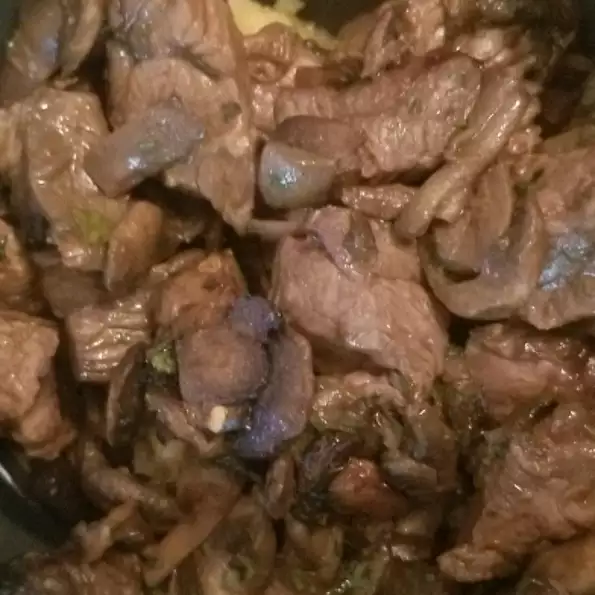

Air Fryer Steak and Mushrooms

This pretty much as good as it gets for the food. Not like, in general, just in what I can help you eat.
So, you think you're too fancy for Kraft Dinner or Instant Ramen. Fine.
Why does milord need to even read recipes? Clearly you are so above us peasants that you need not waste your time with such things. My word, you just know how to cook everything already, don't you? But fine. If you insist on cooking like a normal person, we'll show you
Ingredients
- 1 pound beef sirloin steak, cut into 1-inch cubes
- 8 ounces button mushrooms, sliced
- ¼ cup Worcestershire sauce
- 1 tablespoon olive oil
- 1 teaspoon parsley flakes
- 1 teaspoon paprika
- 1 teaspoon crushed chile flakes
Steps
- Get the steak, mushrooms, olive oil, parsley, paprika, Worcestershire sauce, and chile flakes into a bowl. Leave it in the refrigerator overnight. Be sure to remove it 30 minutes prior to cooking.
- Preheat the air fryer to 200 degrees celsius.
- Drain the steak, then place it and mushrooms into the air fryer.
- Cook in the air fryer for 5 minutes, pause, then cook 5 additional minutes. Let steak and mushrooms rest for about five minutes and it's good to go!